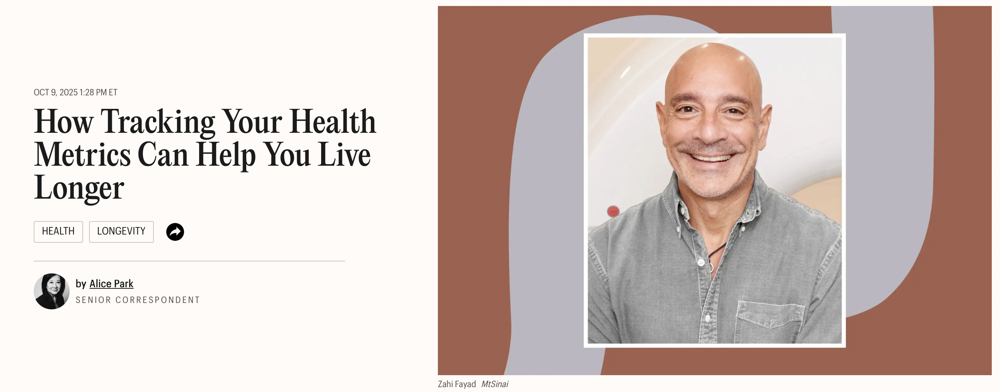
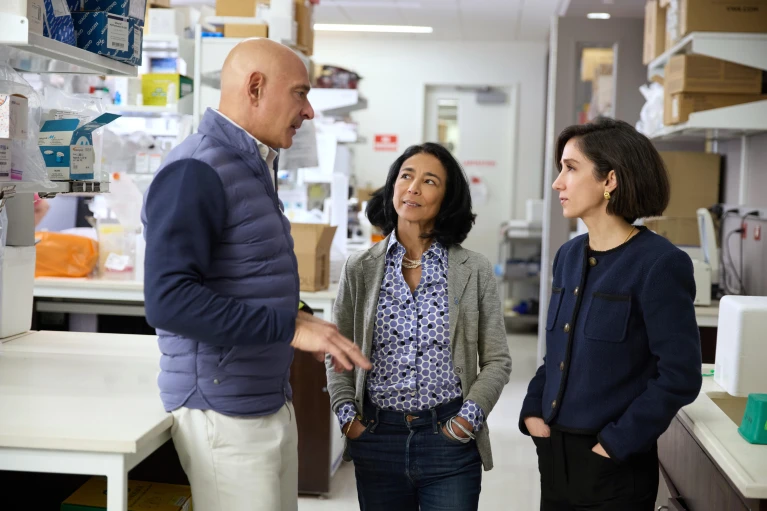

Media Coverage
Our work has been featured across leading health, science & technology platforms
Press & Publications
Our team's breakthroughs have been featured in world-leading publications, highlighting the science and vision behind the DigiTwin Project.

"Let's say you are stable, stable, stable, then suddenly start seeing a small dip in some measurements. That dip is presymptomatic, by the way … That's when I want to intervene." — Zahi Fayad
Tracking health metrics and their role in longevity — an interview with Dr. Zahi Fayad on the future of preventive, data-driven healthcare.
Read in TIME →
"Mount Sinai Researchers Featured in Nature for Advancing Healthspan Science"
Nature published a sponsored feature highlighting Mount Sinai's leadership in redefining ageing through the XPRIZE Healthspan initiative, showcasing the work of Drs. Miriam Merad, Zahi Fayad, and Fanny Elahi.
Read in Nature →Podcast Features
Our project has been featured in leading health and wellness podcasts, exploring the implications of digital twin technology for personalized healthcare.
Video Coverage
Watch our team discuss the latest developments in digital twin technology and its applications in healthcare through these featured video interviews and presentations.
These media appearances showcase our commitment to advancing digital twin technology and its potential to revolutionize healthcare through personalized treatment approaches.